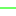

<!doctype html>
<html lang="en">
    <head>
        <meta charset="utf-8">
        <meta http-equiv="X-UA-Compatible" content="IE=edge">
        <meta name="viewport" content="initial-scale=1,user-scalable=no,maximum-scale=1,width=device-width">
        <meta name="mobile-web-app-capable" content="yes">
        <meta name="apple-mobile-web-app-capable" content="yes">
        <link rel="stylesheet" href="css/leaflet.css">
        <link rel="stylesheet" href="css/L.Control.Layers.Tree.css">
        <link rel="stylesheet" href="css/L.Control.Locate.min.css">
        <link rel="stylesheet" href="css/qgis2web.css">
        <link rel="stylesheet" href="css/fontawesome-all.min.css">
        <link rel="stylesheet" href="css/leaflet-control-geocoder.Geocoder.css">
        <style>
        html, body, #map {
            width: 100%;
            height: 100%;
            padding: 0;
            margin: 0;
        }
        </style>
        <title>Fasilitas Pendidikan Pasuruan</title>
    </head>
    <body>
        <div id="map">
        </div>
        <script src="js/qgis2web_expressions.js"></script>
        <script src="js/leaflet.js"></script>
        <script src="js/L.Control.Layers.Tree.min.js"></script>
        <script src="js/L.Control.Locate.min.js"></script>
        <script src="js/leaflet.rotatedMarker.js"></script>
        <script src="js/leaflet.pattern.js"></script>
        <script src="js/leaflet-hash.js"></script>
        <script src="js/Autolinker.min.js"></script>
        <script src="js/rbush.min.js"></script>
        <script src="js/labelgun.min.js"></script>
        <script src="js/labels.js"></script>
        <script src="js/leaflet-control-geocoder.Geocoder.js"></script>
        <script src="data/WilayahAdministrasi_1.js"></script>
        <script src="data/ServiceArea_2.js"></script>
        <script src="data/FasilitasPendidikan_3.js"></script>
        <script>
        var highlightLayer;
        function highlightFeature(e) {
            highlightLayer = e.target;

            if (e.target.feature.geometry.type === 'LineString' || e.target.feature.geometry.type === 'MultiLineString') {
              highlightLayer.setStyle({
                color: '#ffff00',
              });
            } else {
              highlightLayer.setStyle({
                fillColor: '#ffff00',
                fillOpacity: 1
              });
            }
            highlightLayer.openPopup();
        }
        var map = L.map('map', {
            zoomControl:true, maxZoom:28, minZoom:1
        })
        var hash = new L.Hash(map);
        map.attributionControl.setPrefix('<a href="https://github.com/tomchadwin/qgis2web" target="_blank">qgis2web</a> &middot; <a href="https://leafletjs.com" title="A JS library for interactive maps">Leaflet</a> &middot; <a href="https://qgis.org">QGIS</a>');
        var autolinker = new Autolinker({truncate: {length: 30, location: 'smart'}});
        function removeEmptyRowsFromPopupContent(content, feature) {
         var tempDiv = document.createElement('div');
         tempDiv.innerHTML = content;
         var rows = tempDiv.querySelectorAll('tr');
         for (var i = 0; i < rows.length; i++) {
             var td = rows[i].querySelector('td.visible-with-data');
             var key = td ? td.id : '';
             if (td && td.classList.contains('visible-with-data') && feature.properties[key] == null) {
                 rows[i].parentNode.removeChild(rows[i]);
             }
         }
         return tempDiv.innerHTML;
        }
        document.querySelector(".leaflet-popup-pane").addEventListener("load", function(event) {
          var tagName = event.target.tagName,
            popup = map._popup;
          // Also check if flag is already set.
          if (tagName === "IMG" && popup && !popup._updated) {
            popup._updated = true; // Set flag to prevent looping.
            popup.update();
          }
        }, true);
        L.control.locate({locateOptions: {maxZoom: 19}}).addTo(map);
        var bounds_group = new L.featureGroup([]);
        function setBounds() {
            if (bounds_group.getLayers().length) {
                map.fitBounds(bounds_group.getBounds());
            }
        }
        map.createPane('pane_GoogleSatellite_0');
        map.getPane('pane_GoogleSatellite_0').style.zIndex = 400;
        var layer_GoogleSatellite_0 = L.tileLayer('https://mt0.google.com/vt/lyrs=s&x={x}&y={y}&z={z}', {
            pane: 'pane_GoogleSatellite_0',
            opacity: 1.0,
            attribution: '',
            minZoom: 1,
            maxZoom: 28,
            minNativeZoom: 0,
            maxNativeZoom: 20
        });
        layer_GoogleSatellite_0;
        map.addLayer(layer_GoogleSatellite_0);
        function pop_WilayahAdministrasi_1(feature, layer) {
            layer.on({
                mouseout: function(e) {
                    for (var i in e.target._eventParents) {
                        if (typeof e.target._eventParents[i].resetStyle === 'function') {
                            e.target._eventParents[i].resetStyle(e.target);
                        }
                    }
                    if (typeof layer.closePopup == 'function') {
                        layer.closePopup();
                    } else {
                        layer.eachLayer(function(feature){
                            feature.closePopup()
                        });
                    }
                },
                mouseover: highlightFeature,
            });
            var popupContent = '<table>\
                    <tr>\
                        <td colspan="2">' + (feature.properties['WADMKC'] !== null ? autolinker.link(feature.properties['WADMKC'].toLocaleString()) : '') + '</td>\
                    </tr>\
                </table>';
            layer.bindPopup(popupContent, {maxHeight: 400});
            var popup = layer.getPopup();
            var content = popup.getContent();
            var updatedContent = removeEmptyRowsFromPopupContent(content, feature);
            popup.setContent(updatedContent);
        }

        function style_WilayahAdministrasi_1_0() {
            return {
                pane: 'pane_WilayahAdministrasi_1',
                opacity: 1,
                color: 'rgba(247,27,27,1.0)',
                dashArray: '',
                lineCap: 'square',
                lineJoin: 'bevel',
                weight: 1.0,
                fillOpacity: 0,
                interactive: true,
            }
        }
        map.createPane('pane_WilayahAdministrasi_1');
        map.getPane('pane_WilayahAdministrasi_1').style.zIndex = 401;
        map.getPane('pane_WilayahAdministrasi_1').style['mix-blend-mode'] = 'normal';
        var layer_WilayahAdministrasi_1 = new L.geoJson(json_WilayahAdministrasi_1, {
            attribution: '',
            interactive: true,
            dataVar: 'json_WilayahAdministrasi_1',
            layerName: 'layer_WilayahAdministrasi_1',
            pane: 'pane_WilayahAdministrasi_1',
            onEachFeature: pop_WilayahAdministrasi_1,
            style: style_WilayahAdministrasi_1_0,
        });
        bounds_group.addLayer(layer_WilayahAdministrasi_1);
        map.addLayer(layer_WilayahAdministrasi_1);
        function pop_ServiceArea_2(feature, layer) {
            layer.on({
                mouseout: function(e) {
                    for (var i in e.target._eventParents) {
                        if (typeof e.target._eventParents[i].resetStyle === 'function') {
                            e.target._eventParents[i].resetStyle(e.target);
                        }
                    }
                    if (typeof layer.closePopup == 'function') {
                        layer.closePopup();
                    } else {
                        layer.eachLayer(function(feature){
                            feature.closePopup()
                        });
                    }
                },
                mouseover: highlightFeature,
            });
            var popupContent = '<table>\
                    <tr>\
                        <td colspan="2">' + (feature.properties['Join_Count'] !== null ? autolinker.link(feature.properties['Join_Count'].toLocaleString()) : '') + '</td>\
                    </tr>\
                    <tr>\
                        <td colspan="2">' + (feature.properties['Shape_Leng'] !== null ? autolinker.link(feature.properties['Shape_Leng'].toLocaleString()) : '') + '</td>\
                    </tr>\
                    <tr>\
                        <td colspan="2">' + (feature.properties['ObjectID_1'] !== null ? autolinker.link(feature.properties['ObjectID_1'].toLocaleString()) : '') + '</td>\
                    </tr>\
                    <tr>\
                        <td colspan="2">' + (feature.properties['FacilityID'] !== null ? autolinker.link(feature.properties['FacilityID'].toLocaleString()) : '') + '</td>\
                    </tr>\
                    <tr>\
                        <td colspan="2">' + (feature.properties['Name_1'] !== null ? autolinker.link(feature.properties['Name_1'].toLocaleString()) : '') + '</td>\
                    </tr>\
                    <tr>\
                        <td colspan="2">' + (feature.properties['ToBreak'] !== null ? autolinker.link(feature.properties['ToBreak'].toLocaleString()) : '') + '</td>\
                    </tr>\
                </table>';
            layer.bindPopup(popupContent, {maxHeight: 400});
            var popup = layer.getPopup();
            var content = popup.getContent();
            var updatedContent = removeEmptyRowsFromPopupContent(content, feature);
            popup.setContent(updatedContent);
        }

        function style_ServiceArea_2_0(feature) {
            switch(String(feature.properties['Name_1'])) {
                case '0 - 400':
                    return {
                pane: 'pane_ServiceArea_2',
                opacity: 1,
                color: 'rgba(255,18,1,1.0)',
                dashArray: '',
                lineCap: 'square',
                lineJoin: 'bevel',
                weight: 1.0,
                fillOpacity: 0,
                interactive: true,
            }
                    break;
                case '400 - 800':
                    return {
                pane: 'pane_ServiceArea_2',
                opacity: 1,
                color: 'rgba(255,238,1,1.0)',
                dashArray: '',
                lineCap: 'square',
                lineJoin: 'bevel',
                weight: 1.0,
                fillOpacity: 0,
                interactive: true,
            }
                    break;
                case '800 - 1200':
                    return {
                pane: 'pane_ServiceArea_2',
                opacity: 1,
                color: 'rgba(18,255,1,1.0)',
                dashArray: '',
                lineCap: 'square',
                lineJoin: 'bevel',
                weight: 1.0,
                fillOpacity: 0,
                interactive: true,
            }
                    break;
            }
        }
        map.createPane('pane_ServiceArea_2');
        map.getPane('pane_ServiceArea_2').style.zIndex = 402;
        map.getPane('pane_ServiceArea_2').style['mix-blend-mode'] = 'normal';
        var layer_ServiceArea_2 = new L.geoJson(json_ServiceArea_2, {
            attribution: '',
            interactive: true,
            dataVar: 'json_ServiceArea_2',
            layerName: 'layer_ServiceArea_2',
            pane: 'pane_ServiceArea_2',
            onEachFeature: pop_ServiceArea_2,
            style: style_ServiceArea_2_0,
        });
        bounds_group.addLayer(layer_ServiceArea_2);
        map.addLayer(layer_ServiceArea_2);
        function pop_FasilitasPendidikan_3(feature, layer) {
            layer.on({
                mouseout: function(e) {
                    for (var i in e.target._eventParents) {
                        if (typeof e.target._eventParents[i].resetStyle === 'function') {
                            e.target._eventParents[i].resetStyle(e.target);
                        }
                    }
                    if (typeof layer.closePopup == 'function') {
                        layer.closePopup();
                    } else {
                        layer.eachLayer(function(feature){
                            feature.closePopup()
                        });
                    }
                },
                mouseover: highlightFeature,
            });
            var popupContent = '<table>\
                    <tr>\
                        <th scope="row">Nama_Fasum</th>\
                        <td>' + (feature.properties['Nama_Fasum'] !== null ? autolinker.link(feature.properties['Nama_Fasum'].toLocaleString()) : '') + '</td>\
                    </tr>\
                    <tr>\
                        <th scope="row">Jenis</th>\
                        <td>' + (feature.properties['Jenis'] !== null ? autolinker.link(feature.properties['Jenis'].toLocaleString()) : '') + '</td>\
                    </tr>\
                    <tr>\
                        <th scope="row">Kegiatan</th>\
                        <td>' + (feature.properties['Kegiatan'] !== null ? autolinker.link(feature.properties['Kegiatan'].toLocaleString()) : '') + '</td>\
                    </tr>\
                    <tr>\
                        <th scope="row">Jenis_Utam</th>\
                        <td>' + (feature.properties['Jenis_Utam'] !== null ? autolinker.link(feature.properties['Jenis_Utam'].toLocaleString()) : '') + '</td>\
                    </tr>\
                </table>';
            layer.bindPopup(popupContent, {maxHeight: 400});
            var popup = layer.getPopup();
            var content = popup.getContent();
            var updatedContent = removeEmptyRowsFromPopupContent(content, feature);
            popup.setContent(updatedContent);
        }

        function style_FasilitasPendidikan_3_0(feature) {
            switch(String(feature.properties['Kegiatan'])) {
                case 'SMA / Setingkat':
                    return {
                pane: 'pane_FasilitasPendidikan_3',
                radius: 8.0,
                opacity: 1,
                color: 'rgba(50,87,128,1.0)',
                dashArray: '',
                lineCap: 'butt',
                lineJoin: 'miter',
                weight: 2.0,
                fill: true,
                fillOpacity: 1,
                fillColor: 'rgba(133,133,133,1.0)',
                interactive: true,
            }
                    break;
                case 'SMP / Setingkat':
                    return {
                pane: 'pane_FasilitasPendidikan_3',
                radius: 8.0,
                opacity: 1,
                color: 'rgba(50,87,128,1.0)',
                dashArray: '',
                lineCap: 'butt',
                lineJoin: 'miter',
                weight: 2.0,
                fill: true,
                fillOpacity: 1,
                fillColor: 'rgba(72,123,182,1.0)',
                interactive: true,
            }
                    break;
            }
        }
        map.createPane('pane_FasilitasPendidikan_3');
        map.getPane('pane_FasilitasPendidikan_3').style.zIndex = 403;
        map.getPane('pane_FasilitasPendidikan_3').style['mix-blend-mode'] = 'normal';
        var layer_FasilitasPendidikan_3 = new L.geoJson(json_FasilitasPendidikan_3, {
            attribution: '',
            interactive: true,
            dataVar: 'json_FasilitasPendidikan_3',
            layerName: 'layer_FasilitasPendidikan_3',
            pane: 'pane_FasilitasPendidikan_3',
            onEachFeature: pop_FasilitasPendidikan_3,
            pointToLayer: function (feature, latlng) {
                var context = {
                    feature: feature,
                    variables: {}
                };
                return L.circleMarker(latlng, style_FasilitasPendidikan_3_0(feature));
            },
        });
        bounds_group.addLayer(layer_FasilitasPendidikan_3);
        map.addLayer(layer_FasilitasPendidikan_3);
            var title = new L.Control();
            title.onAdd = function (map) {
                this._div = L.DomUtil.create('div', 'info');
                this.update();
                return this._div;
            };
            title.update = function () {
                this._div.innerHTML = '<h2>Fasilitas Pendidikan Pasuruan</h2>';
            };
            title.addTo(map);
        var osmGeocoder = new L.Control.Geocoder({
            collapsed: true,
            position: 'topleft',
            text: 'Search',
            title: 'Testing'
        }).addTo(map);
        document.getElementsByClassName('leaflet-control-geocoder-icon')[0]
        .className += ' fa fa-search';
        document.getElementsByClassName('leaflet-control-geocoder-icon')[0]
        .title += 'Search for a place';
        var baseMaps = {};
        var overlaysTree = [
            {label: 'Fasilitas Pendidikan<br /><table><tr><td style="text-align: center;"></td><td>SMA / Setingkat</td></tr><tr><td style="text-align: center;"></td><td>SMP / Setingkat</td></tr></table>', layer: layer_FasilitasPendidikan_3},
            {label: 'Service Area<br /><table><tr><td style="text-align: center;"></td><td>0 - 400</td></tr><tr><td style="text-align: center;"></td><td>400 - 800</td></tr><tr><td style="text-align: center;"></td><td>800 - 1200</td></tr></table>', layer: layer_ServiceArea_2},
            {label: ' Wilayah Administrasi', layer: layer_WilayahAdministrasi_1},
            {label: "Google Satellite", layer: layer_GoogleSatellite_0},]
        var lay = L.control.layers.tree(null, overlaysTree,{
            //namedToggle: true,
            //selectorBack: false,
            //closedSymbol: '&#8862; &#x1f5c0;',
            //openedSymbol: '&#8863; &#x1f5c1;',
            //collapseAll: 'Collapse all',
            //expandAll: 'Expand all',
            collapsed: false, 
        });
        lay.addTo(map);
        setBounds();
        </script>
    </body>
</html>
